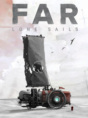

FAR: Lone Sails
FAR: Lone Sails
Detalles
|  | |
| Tiempo de juego | 4h 33m 0s |
| Última actividad | 21/09/2019 16:50:46 |
| Añadido | 24/08/2019 |
| Modificado | Nunca |
| Estado de finalización | Jugado |
| Librería | Steam |
| Fuente | Steam |
| Plataforma | PC (Windows) |
| Fecha de lanzamiento | 17/05/2018 |
| Puntuación de la Comunidad | 91 |
| Puntuación de la Crítica | 80 |
| Puntuación de usuario | |
| Género | Action Adventure Indie |
| Desarrollador | Okomotive |
| Editor | Mixtvision |
| Característica | Achievements Cloud Saves Full Controller Support Nexus Mods Remote Play On TV Single Player Trading Cards |
| Enlaces | Community Hub Discussions Guides News Store Page PCGamingWiki Achievements Nexus Mods |
| Tag | |
Descripción
Talk to us!

Twitter: @FARtheGame
Facebook: FARtheGame
Discord: http://discord.gg/N2ZmRaU
Youtube: MixtvisionGames
About the Game

FAR: Lone Sails is a vehicle adventure game. In a unique vehicle you travel across a dried-out ocean following the tracks of a once thriving civilization. Through an array of roadblocks and through hazardous weather you need to keep your vessel going. Where will this journey take you? Are you the last of your kind?
Key Features
- Master your vessel: Maintain and upgrade your vehicle to overcome numerous obstacles and natural hazards.
- Discover a unique world: Explore a desolate dried-out seabed, follow the trails of your people and find relics and buildings, that tell the story of a civilization on the run.
- Experience an atmospheric journey: Let the sky full of clouds pass by and heed the wind that drives your sails towards the horizon.
- A Zombie-free Post-Apocalypse: It’s just you and your machine vs. the big nothing.